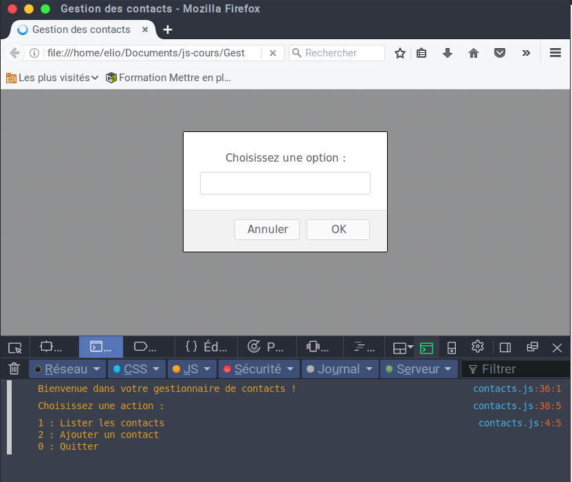
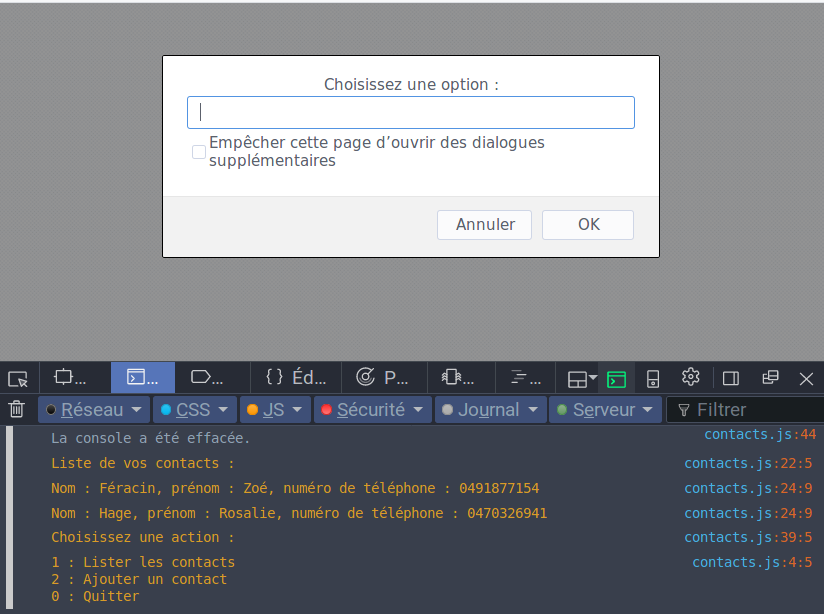
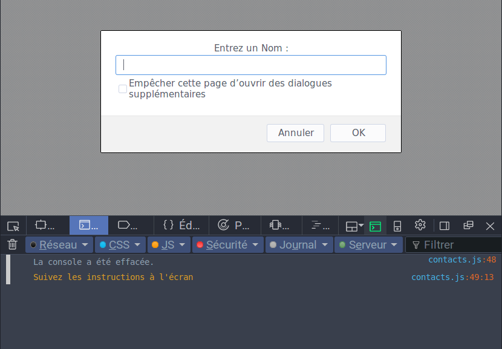
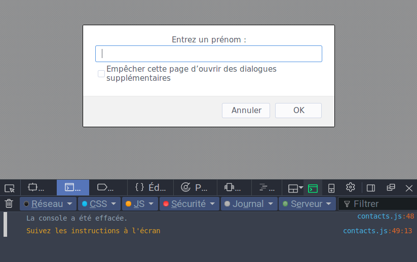
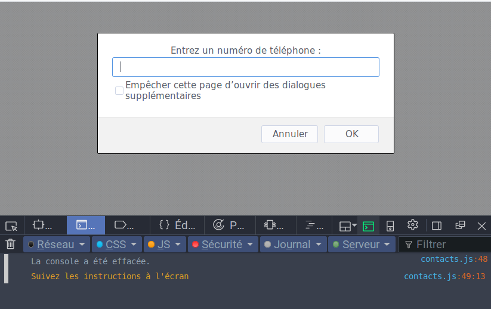
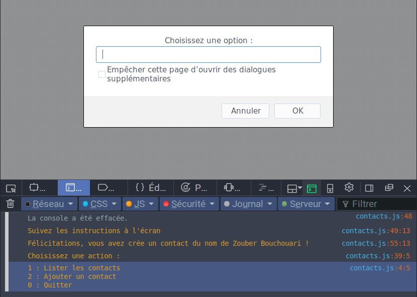

Gestionnaire de contacts
Chaque contact a un nom, un prénom et un numéro de téléphone présenté sous forme de "string". Le programme gère un tableau de contacts et offre à l’utilisateur le choix entre les fonctionnalités suivantes :
- Afficher chaque contact du tableau.
- Ajouter un nouveau contact.
- Quitter.
Les deux contacts à insérer initialement dans le tableau sont :
- Zoé Féracin
- Rosalie Hage
Démonstration
Au démarrage du programme, celui-ci affiche un message de bienvenue à l'utilisateur et lui propose 3 actions.

Lorsque l'utilisateur saisit le choix "Lister les contacts", le programme affiche la liste des contacts (nom, prénom, n° de téléphone) et propose à nouveau à l'utilisateur d'entrer une option.

Lorsque l'utilisateur choisit le choix "ajouter un contact", le programme va lui demander son nom, son prénom et son numéro de téléphone avant de lui confirmer l'ajout du nouveau contact. 

Contrôle de saisie
Il est indispensable que le programme vérifie que :
- L'utilisateur entre une option valide;
- L'uilisateur entre des noms et prénoms valides;
- Que l'utilisateur entre un numéro de téléphone valide, au format belge (04XXXXXXXX)
Résultats
Voici les liens de téléchargements des différents résultats obtenus.